Fotografia de natura
El motiu pel qual em vaig apassionar per la fotografia eren les fotografies de flors és per això que no pot faltar un apartat a la web de fotografia de natura. La natura em transmet bellesa i per això m'agrada tant fotografiar-la.
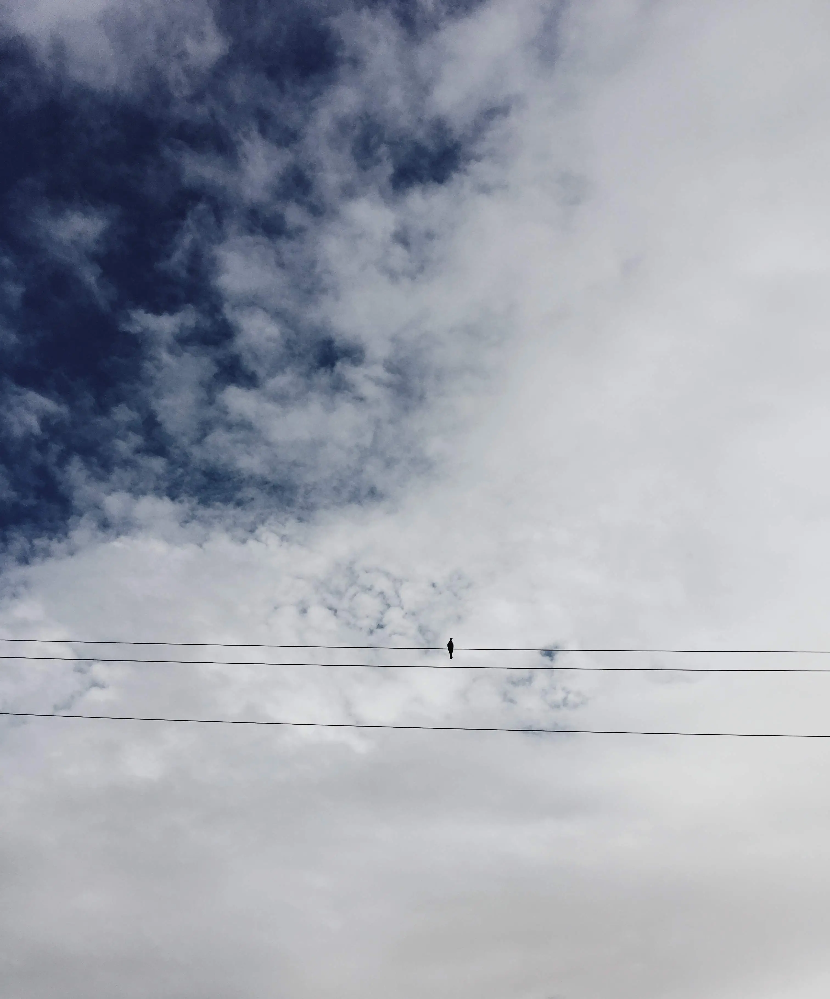
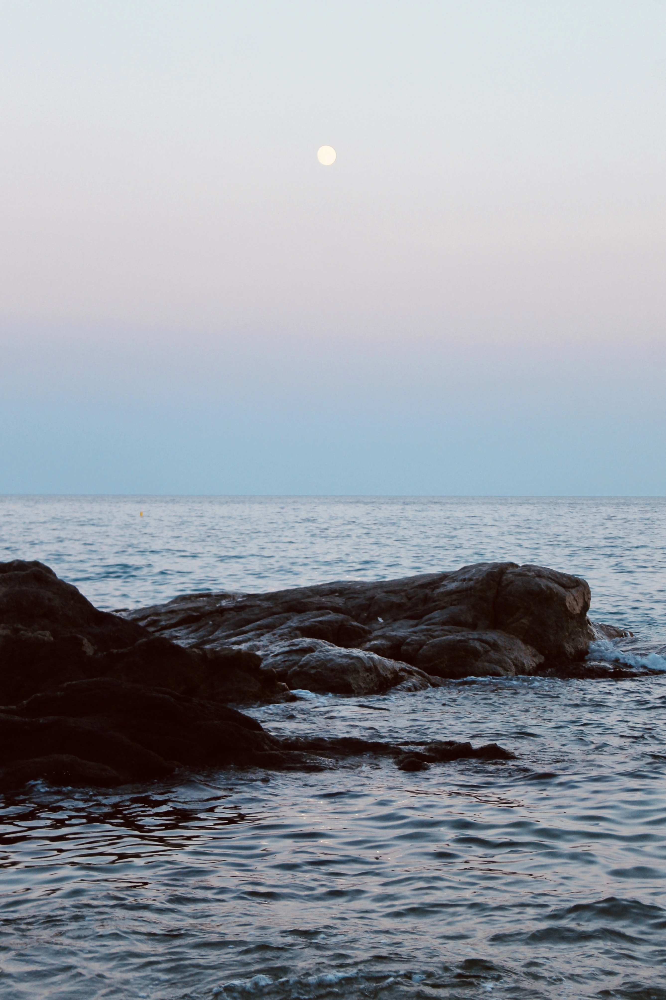
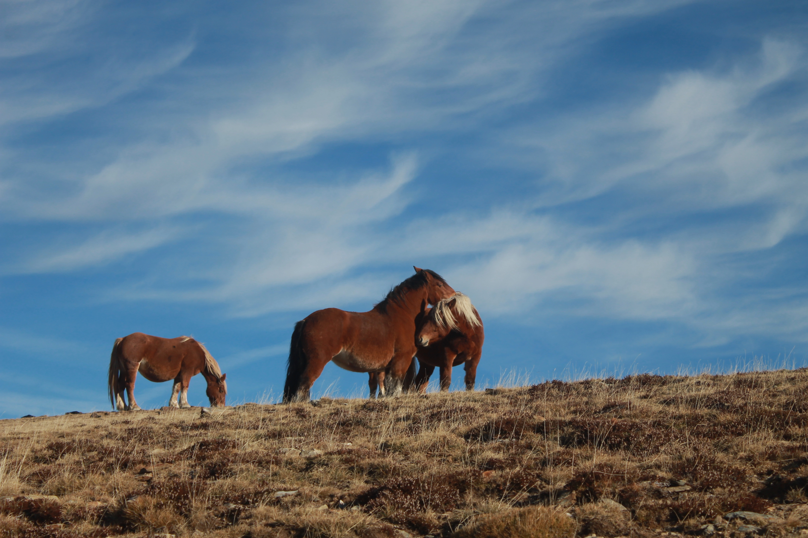
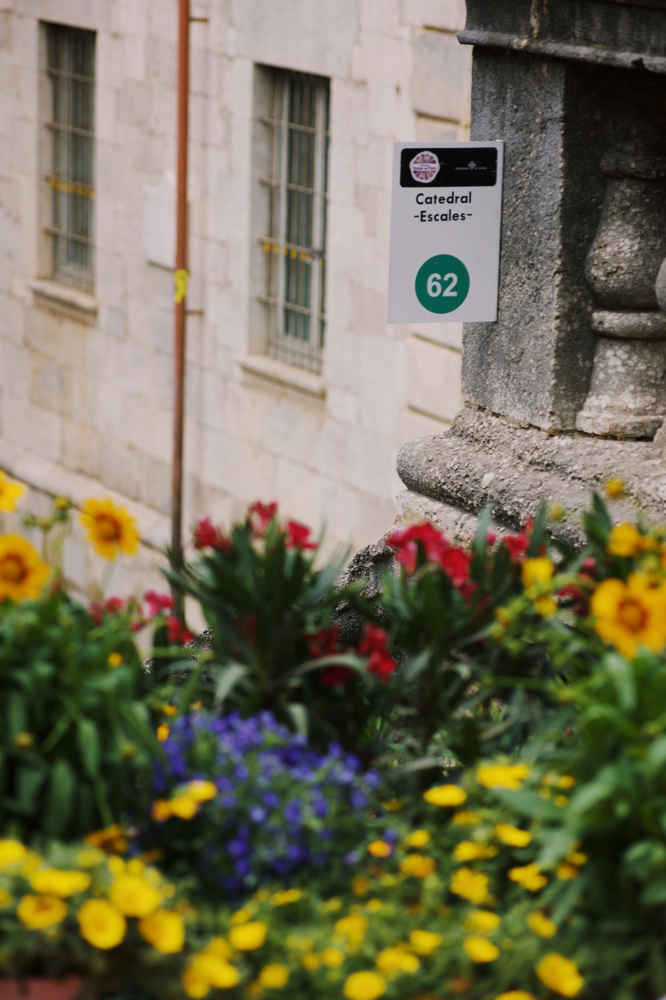
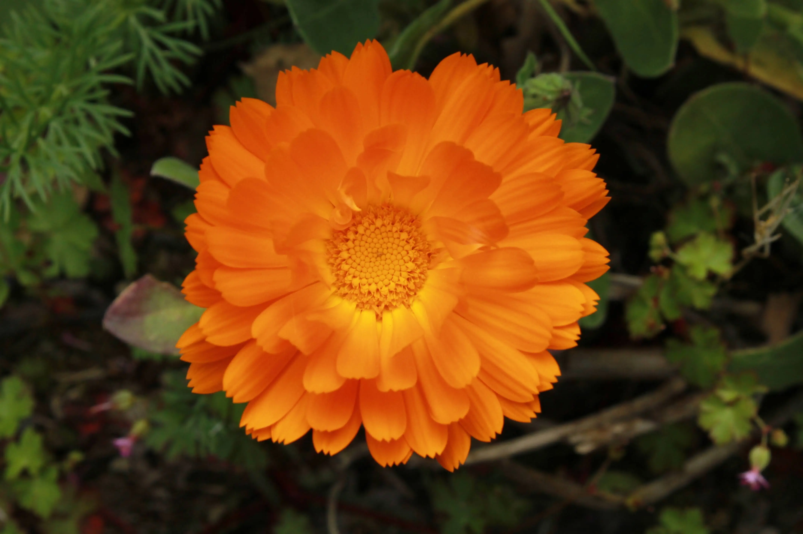
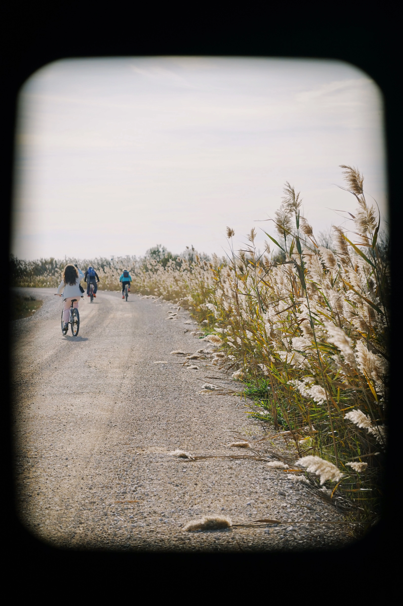
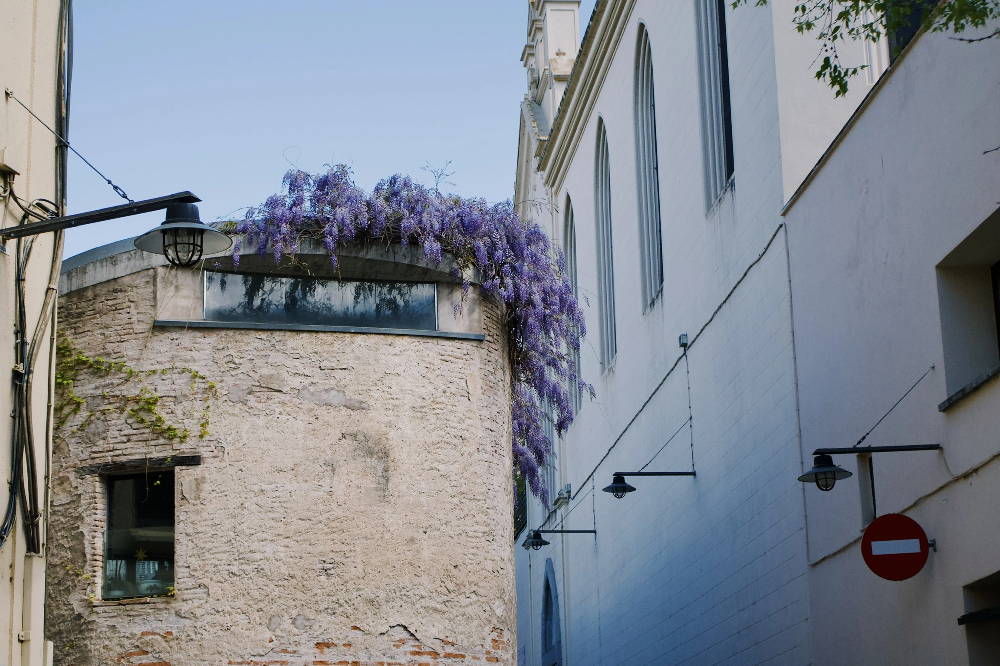
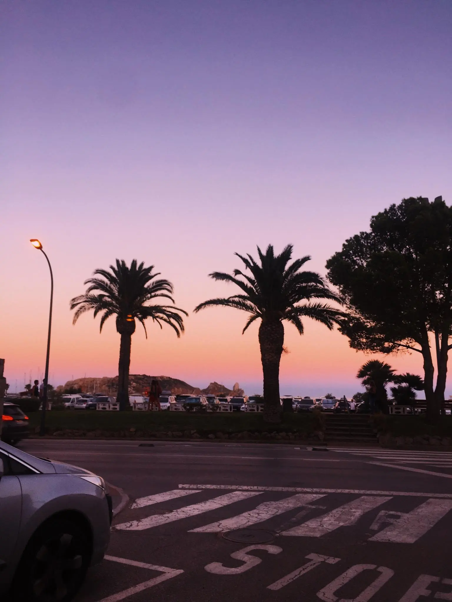
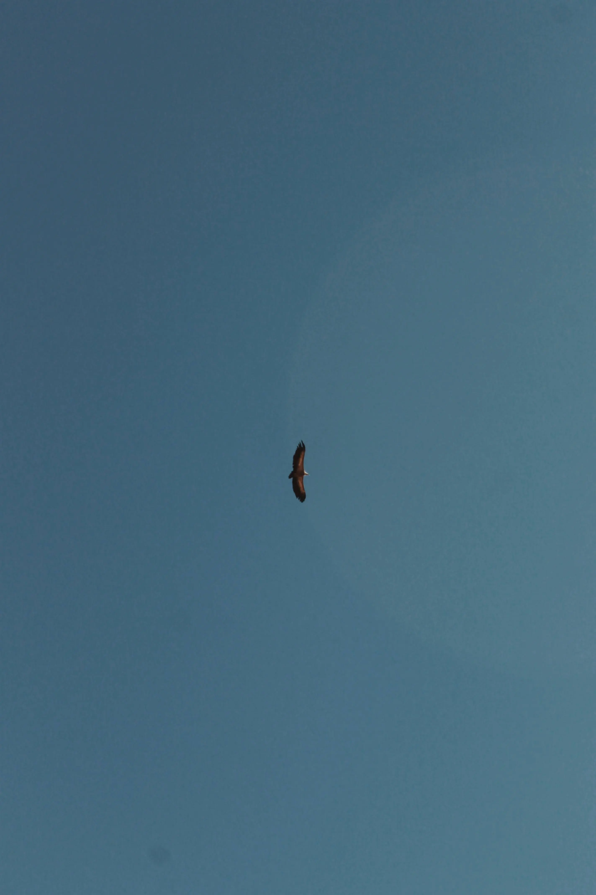
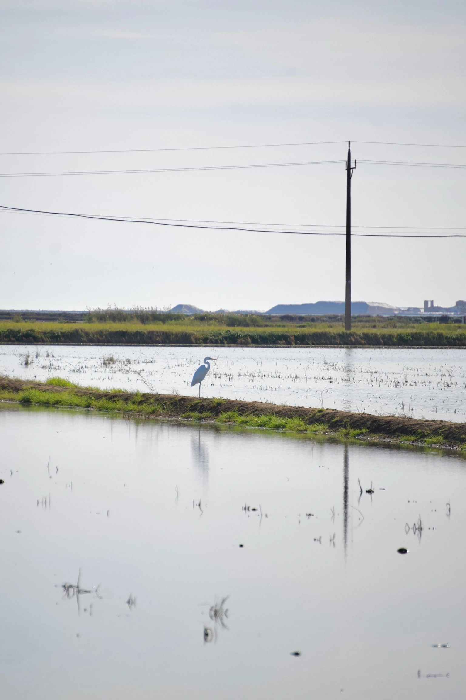
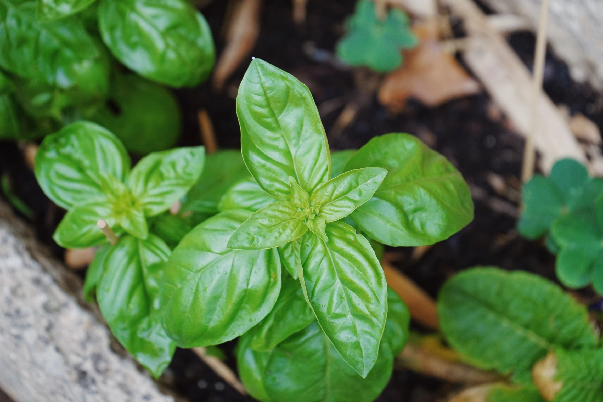
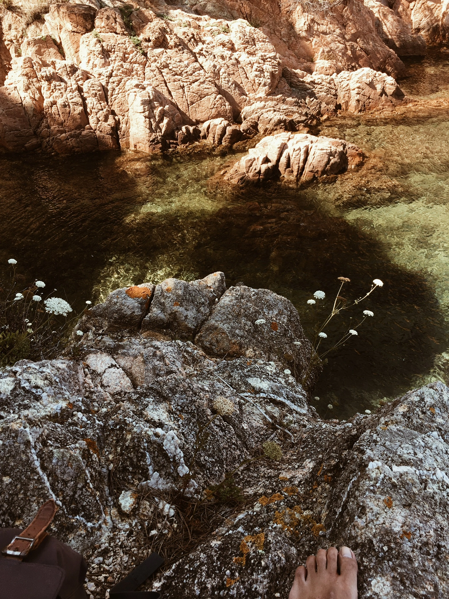